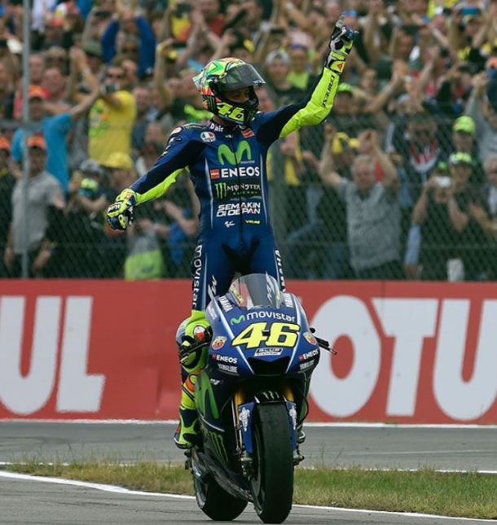
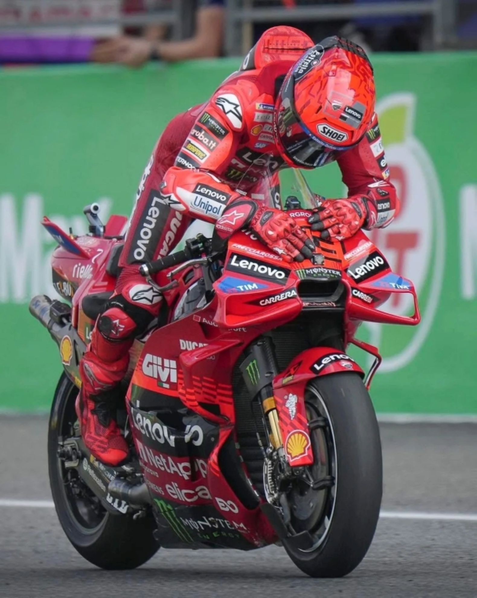
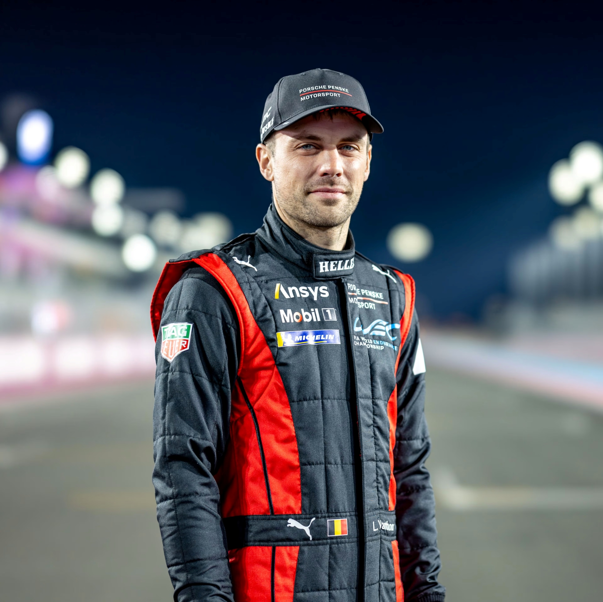

Valentino Rossi é amplamente reconhecido como um dos maiores pilotos da história do motociclismo. Com 9 títulos mundiais em diferentes categorias, sendo 7 deles na principal (MotoGP), sua carreira é marcada por carisma, longevidade e rivalidades icônicas. Seu estilo agressivo e sua conexão com os fãs o tornaram uma verdadeira lenda das pistas.

Marc Márquez é um dos maiores nomes do MotoGP moderno. Com apenas 20 anos, tornou-se o mais jovem campeão da categoria em 2013. Conquistou 6 títulos na MotoGP entre 2013 e 2019, sendo conhecido por seu estilo agressivo, manobras ousadas e domínio técnico. Sua carreira é marcada por retornos impressionantes após lesões sérias.

Laurens Vanthoor é um dos mais respeitados pilotos de GT3 da atualidade. Campeão das 24h de Nürburgring, Spa e do FIA GT World Cup, é piloto oficial da Porsche e destaque em competições como o GT World Challenge e IMSA. Conhecido por sua precisão e agressividade nas pistas, Vanthoor é sinônimo de excelência nas corridas de endurance e sprint.